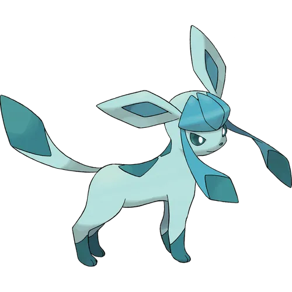

글레이시아는 4세대에 리피아와 함께 새롭게 등장한 이브이의 얼음 타입 진화형이다. 이름인 Glacia는 고대 라틴어로 '빙하', 에스페란토어로 '얼음의'를 뜻하며, 빙하를 뜻하는 영단어 Glacier의 어원이다. 모티브는 북극여우. 이마에 붙어있는 얼음조각과 머리 옆으로 길게 내려오는 장식 덕분에 대체로 여성스럽다는 평가를 받으며 의인화 팬아트도 대부분 여성이다.[4][5] 글레이시아를 쓰는 네임드 NPC는 무청, 난천과 N, 지나, 주혜가 있는데 난천의 경우에는 B&W2부터 사용했고, N도 B&W2에서 엔딩 후 싸라기눈 날씨파티에서, 지나 역시도 XY가 아닌 썬문에서부터 사용한다. N의 경우에는 특별한 경우니 메인이라고 보기엔 무리가 있고, 난천은 애니메이션에서도 사용하고 월드토너먼트에서도 사용하는 것을 고려하면 공식이라 봐도 된다. 참고로 난천의 글레이시아와 N의 글레이시아, 주혜의 글레이시아 모두 암컷. NPC의 포켓몬은 한쪽 성비가 높은 경우[6] NPC의 성별에 상관없이 그쪽 성별로 정해지는데 비해 난천과 N은 조금 특이한 케이스다. 무청은 PT에서 재대결 때 사용하며, 월드토너먼트와 브다샤펄 재대결에서도 사용한다. 이쪽은 수컷. 디자이너는 타 이브이 계열과 같이 피카츄의 어머니 니시다 아츠코다. 그래서인지 타 이브이 진화체처럼 인기도 상당히 많다. 포켓몬 총 선거(인기투표) 당시 720마리 중 47위를 했다. 이브이 진화형 중 2위. 님피아 다음으로 인기가 많다.
